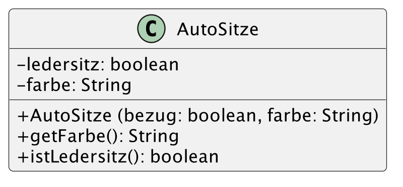
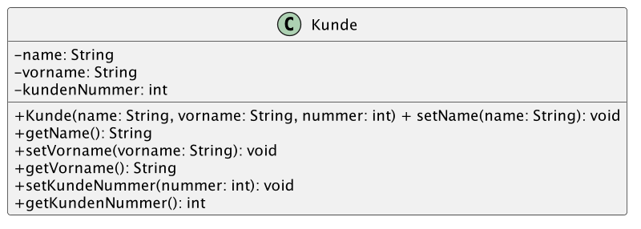

# Programmieren - Übungen ### Matthias Berg-Neels ---- ## Kapitelübersicht - Programmieren 1 1. Einführung 2. Grundlagen von Java 3. Datentypen 4. Ausdrücke und Anweisungen 5. Okjektorientierung 6. Vererbung 7. Interfaces ---- ## Kapitelübersicht - Programmieren 2 8. Exception Handling 9. Collection Framework 10. Swing 11. Optional: Input- & Output-Stream 12. Datenstrukturen 13. Algorithmen --- # Kapitel 1 # Einführung ## Kontrollfragen & Übungen ---- ### Kontrollfragen 1. Nennen Sie die Definition für den Begriff des Algorithmus im Kontext der Informatik. 2. Beschreiben Sie die Bestandteile sowie die Eigenschaften von Algorithmen. 3. Nennen Sie fünf Grundelemente der Programmierung. 4. Welche Möglichkeiten stehen Ihnen zur Verfügung, um Algorithmen grafisch darzustellen? 5. Was ist ein wesentlicher Nachteil der Programmablaufpläne? 6. Beschreiben Sie die Darstellungsform „Pseudocode“! ---- ### Übungen 1. Beschreiben Sie den euklidschen Algorithmus zur Berechnung des größten gemeinsamen Teilers als Struktogramm und Programmablaufplan! 2. Beschreiben Sie einen Algorithmus zur Berechnung der Fakultät! Nutzen Sie dazu den Pseudocode. 3. Beschreiben Sie im Pseudocode einen Algorithmus zur Bestimmung der Fibonacci Folge 1 – 1 – 2 – 3 – 5 – 8 – 13 – 21! 4. Beschreiben Sie in einem Struktogramm das Sieb des Eratosthenes zur Bestimmung von Primzahlen. --- # Kapitel 2 # Grundlagen von Java ## Kontrollfragen ---- ### Kontrollfragen 1. Beschreiben Sie die wesentlichen Eigenschaften von Java! 2. Beschreiben Sie die Funktionsweise eines Compilers! 3. Welche Aufgaben übernimmt der Linker? 4. Nennen Sie unterschiedliche Interpreter-Arten! 5. Welche Rolle spielen Compiler und Interpreter im Umfeld der Programmiersprache Java? 6. Beschreiben Sie den Prozess von der Erstellung des Quellcodes bis zur Ausführung des Programms in der Programmiersprache Java! 7. Nennen Sie drei wesentliche Java-Tools und beschreiben Sie kurz deren Aufgaben! 8. Beschreiben Sie das Paketkonzept der Programmiersprache Java! 9. Welche wesentlichen Systemvariablen kennen Sie im Java-Umfeld? 10. Beschreiben Sie die wesentlichen Unterschiede der verschiedenen Editionen im Rahmen der Java 2™ Platform! 11. Wozu werden die einzelnen Systemvariablen benötigt? --- # Kapitel 3 # Datentypen ## Kontrollfragen ---- ### Kontrollfragen 1. Welche unterschiedlichen Datentypen kennen Sie in Java? 2. Wie lassen sich diese Datentypen klassifizieren? 3. Nennen Sie die numerischen Datentypen der Programmiersprache Java! Worin liegt der wesentliche Unterschied im Wertebereich? 4. Wie können Variablen und Konstanten in Java deklariert initialisiert werden? 5. Was ist der Unterschied zwischen einer Konstanten und einer Variablen? 6. Erläutern Sie den Begriff „Literal“ am Beispiel der numerischen Literale! 7. Was sind Escape-Sequenzen? 8. Beschreiben Sie die Konvertierungsregeln in Java bzgl. Erweiternder und einschränkender Konvertierungen für einfache Datentypen! 9. Was ist ein Array und wie ist dieses aufgebaut? 10. Welche Aufgabe erfüllt das Attribut length bei einem Array? 11. Worin unterscheidet sich die Deklaration eines Arrays von der Deklaration einer einfachen Variablen? 12. Was sind Referenzdatentypen? --- # Kapitel 4 # Ausdrücke und Anweisungen ## Kontrollfragen & Übungen ---- ### Kontrollfragen 1. Was verstehen Sie im Zusammenhang mit Programmierung unter dem Begriff „Ausdruck? 2. Woraus setzen sich Ausdrücke zusammen? 3. Zählen Sie unterschiedliche Operatoren auf! Unterscheiden Sie dabei die Operatoren nach dem Typ der Operanden! 4. Erläutern Sie den Fragezeichenoperator anhand des folgenden Codings! ```Java String X = (a == b) ? “Ja“ : “Nein“; ``` 5. Definieren Sie den Begriff „Anweisung“ im Sinne der Programmierung! 6. Welche Möglichkeiten bietet Ihnen die Programmiersprache Java, um Verzweigungen zu realisieren? 7. Erläutern Sie den Begriff „dangling else“! ---- ### Kontrollfragen 8. Welche Bedeutung messen Sie der Break-Anweisung im Zusammenhang mit der Switch-Anweisung bei? 9. Nennen Sie die unterschiedlichen Schleifenarten in Java und beschreiben Sie deren Verhalten! 10. Worin besteht der wesentliche Unterschied zwischen einer kopf- und einer fußgesteuerten Schleife? 11. Beschreiben Sie den Schleifenkopf einer For-Schleife! 12. Was bewirken die Break- und die Continue-Anweisung innerhalb einer Schleife? ---- ### Übungen <div> 1. Implementieren Sie Ihr Struktogramm aus Übung 1 im Kapitel 1. zur Berechnung des größten gemeinsamen Teilers nach Euklid! 2. Implementieren Sie Ihre Pseudocode-Lösung aus Übung 2 im Kapitel 1. zur Berechnung der Fakultät einer Zahl! 3. Implementieren Sie Ihr Struktogramm aus Übung 4 im Kapitel 1. zur Bestimmung der Primzahlen nach dem Sieb des Eratosthenes, wobei der Anwender eine beliebige Zahl eingeben soll. Verwenden Sie dazu folgende Eingabemöglichkeit: ```JAVA import javax.swing.JOptionPane; //... String s = JOptionPane.showInputDialog("Geben Sie eine Zahl ein:"); int zahl = Integer.parseInt(s); ``` 4. Formulieren Sie eine Anweisung, die zur folgenden semantisch äquivalent ist zu folgender Anweisung ohne Verwendung des Wortes “if” und unter Verwendung logischer Operatoren. ```Java return a==b ? false : true; ``` </div><!-- .element style="font-size: 0.8em;" --> ---- <div> 5. Gegeben sind folgende Variablen mit ihren Werten: ```JAVA int a = 10; int b = 5; boolean z = false; ``` Füllen Sie folgende Wahrheitstabelle aus: |Ausdruck|Wahrheitswert| |:-------|:------------| | ```!z```|| | ```a < 20```|| | ```a == 2 * b```|| | ```a % b != 0```|| | ```(a > b) && z```|| | ```(a > b) \|\| z```|| | ```!(a < b) ^ !z```|| |```(a < b) \|\| ((a % 3 < b) && !z)```|| </div><!-- .element style="font-size: 0.8em;" --> ---- 6. Folgende Ausgabe soll erzeugt werden: ``` 1 3 5 7 9 ``` Lösen Sie diese Aufgabe mithilfe einer * While-Schleife * Do-while-Schleife * For-SchleifeunddesModulo-Operators * For-Schleife ohne den Modulo-Operator Lösen Sie die Teilaufgaben zunächst mit einem Struktogramm, bevor Sie mit der Implementierung beginnen. 7. Folgende Ausgabe soll erzeugt werden: ``` 1 2 4 7 11 16 22 29 37 ``` Lösen Sie diese Aufgabe mithilfe einer * Do-while-Schleife * For-Schleife ---- 8. Entwerfen Sie eine For-Schleife, die die Buchstaben A bis Z auf dem Bildschirm ausgibt. 9. Welche mathematischen Operationen werden durch die Methoden ```meth1()``` und ```meth2()``` beschrieben und welche Werte haben ```zahl1``` und ```zahl2``` am Ende der Berechnung? <div> ```Java public class TestAlgorithmen { public static void main(String[] args) { int zahl1 = meth1(-5); int zahl2 = meth2(2, 6); System.out.println("Zahl 1:\t" + zahl1 + "\nZahl 2:\t" + zahl2); } static int meth1(int a) { if(a < 0) a=-a; int rc=0; for( int i=0; i<a; i++ ) rc += a; return rc; } static int meth2(int a, int b) { // Wenn b<0 wird eine Fehlermeldung erzeugt -> 2. Semester // Die Fehlermeldung führt zum Abbruch der Methode if(b < 0) throw new RuntimeException( "unerlaubter Wert"); if(b == 0) return 1; int rc = a; for(int i = 1; i < b; i++) rc *= a; return rc; } } ``` </div><!-- .element style="font-size: 0.8em;" --> ---- 10. Setzen Sie Ihre Lösung zur Bestimmung der Fibonacci-Folge aus Übung 3 im Kapitel 1.2 in ein Programm um, wobei die Zahlenfolge dauerhaft in einem Array gespeichert werden soll! 11. Beschreiben Sie einen iterativen Algorithmus zur Berechnung der Wurzel einer Zahl nach dem Heron-Verfahren (babylonisches Wurzelziehen) als Struktogramm! Dabei gilt folgende Berechnungsvorschrift: a = Zahl, deren Quadratwurzel bestimmt werden soll X(n) = Ergebnis des letzten Iterationsschrittes, wobei X(0) dem Wert a entspricht $$ X(n+1) = \frac{X(n) + \frac{a}{X(n)}}{2} $$ Die Berechnung soll abbrechen, sobald die Differenz zwischen X(n+1) und X(n) weniger als ± 0,000001 beträgt. ---- 12. Beschreiben Sie in einem Struktogramm einen Algorithmus zur Berechnung des Pascal’schen Dreiecks und implementieren Sie diesen. Beispiel: ``` 1 1 1 1 2 1 1 3 3 1 1 4 6 4 1 1 5 10 10 5 1 1 6 15 20 15 6 1 1 7 21 35 35 21 7 1 ``` --- # Kapitel 5 # Okjektorientierung ---- 1. Die Klasse ```java.lang.Math``` stellt eine Sammlung von mathematischen Stan- dardfunktionen dar, die allesamt als ```static``` definiert sind. Weil die Klasse über keine Instanzmethoden oder -variablen verfügt, wäre eine Erzeugung von Objekten dieser Klasse recht unsinnig. Um dies zu verhindern, haben ihre Programmie- rer einen Trick angewendet. Wie konnten sie eine Instanziierung verhindern, ohne die Klasse abstrakt zu definieren? 2. Innerhalb eines Pakets ```mypackage``` werden zwei Klassen ```Vater``` und ```Sohn``` definiert. ```Sohn``` ist eine Subklasse der Klasse ```Vater```. Beide verfügen über eine Methode ```familienbande()```, die nur für Kindklassen innerhalb des Pakets zugänglich sein soll. * Welcher Modifikator ist also für die Methode zu nehmen: public, protected, private oder der Standardmodifikator? --- # Kapitel 6 # Vererbung --- # Kapitel 7 # Interfaces ## Kontrollfragen & Übungen ---- ### Kontrollfragen > Todo ---- ### Übungen > Todo --- # Kapitel 8 # Exception Handling ## Kontrollfragen & Übungen ---- ### Kontrollfragen 1. Welche Unterschiedlichen Fehler kennen Sie im Java-Umfeld? Welche Fehler sollten nicht, können oder müssen behandelt werden? 2. Welche Arten von Ausnahmen sind Ihnen im Java-Umfeld bekannt? 3. Erläutern Sie das Grundprinzip der Ausnahmebehandlung! 4. Was verstehen Sie unter „eine Ausnahme“ werfen, fangen und weitergeben? 5. Welches sind die wesentlichen Methoden der Klasse Throwable? 6. Worin unterscheiden sich checked und unchecked Exceptions? 7. Wozu dient der Finally()-Block bei einer Try-Catch-Anweisung? 8. Welche Möglichkeiten sind Ihnen zum Erzeugen eigener Ausnahmeklassen bekannt? 9. Was würde passieren, wenn eine Ausnahme nicht abgefangen, sondern immer weitergegeben wird? ---- ### Übungen 1. Das folgende Programm soll die Zahlen von 1 bis 100 in eine Textdatei mit dem Namen ausgabe.txt schreiben. Leider kann das Programm in dieser Form nicht ausgeführt werden. Was ist der Grund dafür und wie können Sie es korrigieren? (Anmerkung: Auch wenn der Input- & Output-Stream noch nicht behandelt wurde, können Sie die Frage schon jetzt beantworten.) ```Java import java.io.FileWriter; public class Uebung1 { public static void main(String[] args) { FileWriter datei; String text; datei = new FileWriter("ausgabe.txt"); text = "1\n"; for(int i = 2; i <=100; i++){ text += i; text += "\n"; } datei.write(text, 0, text.length()); datei.flush(); } } ``` ---- ### Übungen <div> 2. In Ihrem Unternehmen beziehen Sie Autositze. Für das Beziehen stehen Ihnen die Materialien Leder und Stoff zur Verfügung. Den Stoff können Sie in jeder beliebigen Farbe liefern. Leder jedoch ist nur in den Farben Schwarz und Weiß lieferbar. Implementieren Sie eine Klasse AutoSitze gemäß der Vorgaben des UML- Diagramms. Der Konstruktor soll eine Fehlermeldung der von Ihnen zu implementierenden Fehlerklasse FalscheParameter erzeugen, sobald er ungültige Parameterkombinationen erhält. Der Meldungstext der Fehlerklasse soll die fehlerhafte Parameterkombination ausgeben. Testen Sie Ihre Klasse AutoSitze mit einem kleinen Testprogramm TestAutoSitzeException. In Ihrem Testprogramm soll nach erfolgreichem Durchlauf des Konstruktors eine Meldung ausgegeben werden, in welcher Farbe und in welchem Material der Sitz bezogen wurde. Sollte während dem Durchlauf des Konstruktors eine Ausnahme ausgelöst werden, geben Sie bitte in Ihrem Testprogramm den Meldungstext der Ausnahme sowie einen kleinen Hinweis, dass das Beziehen fehlgeschlagen ist, aus. </div><!-- .element style="font-size: 0.8em;" --> <!-- .element style="border: 0px; box-shadow: 0 0 0 0" --> ---- ### Übungen 3. Im folgenden Quellcode befindet sich ein logischer Fehler. Worin besteht er und wie kann er behoben werden? <div> ```Java public class TankLeerDemo { public static void main(String[] args) { Auto bmw = new Auto(0, 35487); bmw.tanken(); bmw.tanken(); try { bmw.fahren(); } catch (TankLeer e) { System.out.println(e.getMessage()); } bmw.tanken(); try { bmw.fahren(); } catch (Exception e) { e.printStackTrace(); } catch (TankLeer e) { System.out.println(e.getMessage()); System.out.println(e.toString()); e.printStackTrace(); } finally { System.out.println("Der neue Kilometerstand: " + bmw.getKmCount()); bmw.getKmCount()); } } } ``` </div><!-- .element style="font-size: 0.8em;" --> --- # Kapitel 9 # Collection Framework ## Kontrollfragen & Übungen ---- ### Kontrollfragen <div> 1. Was können Datencontainer des Collection Framework enthalten? 2. Welche drei Arten von Containern kennen Sie? 3. Worin unterscheiden sich die drei Containerarten? 4. Was ist der Unterschied zwischen Arrays und Containern des Collection Framework? 5. Sie möchten ein Schachfeld oder auch den Spielplan von „Schiffe versenken“ in Java implementieren. Dazu müssen Sie einen Repräsentanten des Spielfeldes im Speicher erzeugen und verwalten. Welche Datenstrukturen würden Sie dabei verwenden? Wie begründen Sie Ihre Entscheidung? 6. Wozu werden Iteratoren benötigt? 7. Was müssen Sie bei Containern beachten, in denen die Objekte sortiert abgelegt werden? 8. Wozu brauchen Sie die Interfaces Comparable und Comparator? 9. Können Sie Listen-Container sortieren? Wenn ja, wie gehen Sie bei der Realisierung vor? 10. Welche Möglichkeiten haben Sie, um Objekte miteinander zu vergleichen? Worin liegt der Unterschied der Vergleichsmöglichkeiten? 11. Was müssen Sie beim Überschreiben der equals()-Methode für direkte und indirekte Sub-Klassen der Klasse Object beachten? 12. Worin besteht der Zusammenhang zwischen der hashCode()- und der equals()- Methode? 13. Beschreiben Sie zwei einfache Möglichkeiten, um eine hashCode()-Methode zu überschreiben! 14. Was sind Wrapper-Klassen und wozu werden sie benötigt? 15. Sie legen Objekte der Wrapper-Klasse Double in einem Datencontainer der Klasse TreeSet ab. Warum ist dies problemlos möglich? 16. Worin liegen die wesentlichen Unterschiede zwischen Maps und Lists? </div><!-- .element style="font-size: 0.8em;" --> ---- ### Übungen <div> 1. Implementieren Sie zunächst eine Klasse ```Kunde``` gemäß der Vorgaben des UML- Diagramms. <!-- .element style="border: 0px; box-shadow: 0 0 0 0" --> Schreiben Sie sich ein Testprogramm ```TestKunde```. In diesem Testprogramm erzeugen Sie sich zunächst fünf Objekte der Klasse ```Kunde``` . Namen, Vornamen und Kundennummern finden Sie in dieser Tabelle: |Name |Vorname |Kundennummer| |:----------|:--------------|:------------| |Mustermann|Klaus|4711| |Beispiel|Hans|5180| |Mustermann|Hilde|4712| |Vorbild|Theodor|8278| |Dummy|Jimmy|1111| Nachdem Sie die Objekte erzeugt haben, möchten Sie die Objekte in einem Datencontainer der Klasse TreeSet ablegen. Erweitern Sie entsprechend Ihre Klasse Kunde, so dass die Objekte der Klasse Kunde aufsteigend nach der Kundennummer sortiert werden. Geben Sie abschließend die Elemente aus dem TreeSet über einen Iterator auf der Konsole aus, um den Erfolg der Sortierung zu überprüfen. </div><!-- .element style="font-size: 0.6em;" --> ---- ### Übungen 2. Erweitern Sie die Klassen ```Kunde``` und ```TestKunde``` aus der vorangegangenen Übung so, dass Sie die Objekte der Klasse ```Kunde``` in einem Datencontainer der Klasse ```Vector``` nach dem Namen und bei Namensgleichheit nach dem Vornamen aufsteigend sortiert ablegen können. Geben Sie abschließend auch die Elemente aus dem ```Vector``` über einen ```Iterator``` ebenfalls auf der Konsole aus, um auch den Erfolg der zweiten Sortierung zu überprüfen. 3. Ermöglichen Sie es, dass Objekte der Klasse ```Kunde``` aus den vorangegangenen Übungen miteinander verglichen werden können. Implementieren Sie dazu alle erforderlichen Methoden in der Klasse ```Kunde```. Testen Sie die Vergleichsmethode(n), indem Sie in einem Testprogramm ```TestVergleichKunde``` zwei gleiche Objekte der Klasse ```Kunde``` erzeugen und diese miteinander vergleichen. Geben Sie das Ergebnis des Vergleichs auf der Konsole aus.